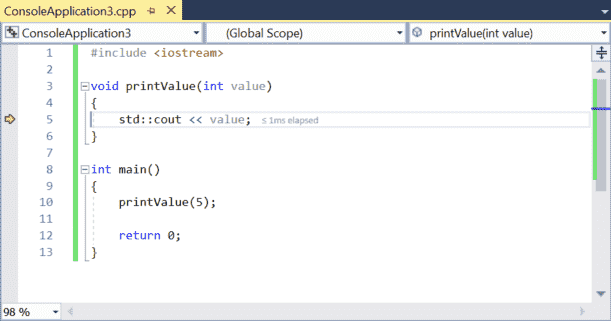
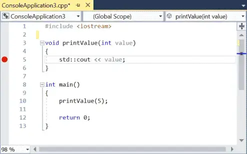
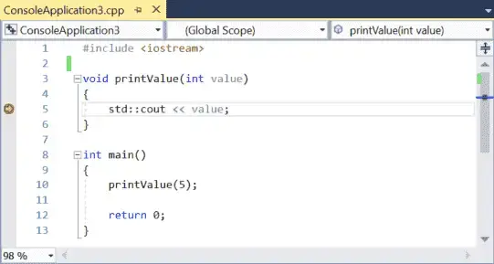

虽然单步调试（3.6 - 使用集成调试器之单步调试）对于独立测试单行代码是非常有用的，但是对于大型程序而言，使用单步调试可能需要花费很长的时间才能调试到对应的代码点。
幸运的是，现代调试器提供了很多工具来帮助我们更高效的调试程序，在本章节，我们将会了解到一些帮助我们更快导航到我们要调试的目标代码的调试器功能。
运行到光标处#
第一个非常有帮助的命令通常称为 运行到光标处。这个命令会执行程序到你光标选中的语句处，然后将控制权返回给你以便于你可以开始在指定点开始调试，这为在代码中的特定点开始调试提供了一种有效的方法，或者如果你已经在调试，可以直接移动到您想要进一步检查的位置。
!!! example “Visual Studio 用户”
在 Visual Studio 中，可以在语句处单击鼠标右键然后在弹出的菜单中选择 _运行到光标处_，或者按 ctrl-F10 组合快捷键来访问 _运行到光标处_ 命令。
!!! example “Code::Blocks 用户”
在 Code::Blocks 中，可以在语句处单击鼠标右键然后在弹出的菜单中选择 _运行到光标处_，或者 _Debug菜单 > 运行到光标处_，或者按 F4 快捷键。
让我们用和之前一样的代码来尝试一下这个命令：
#include <iostream>
void printValue(int value)
{
std::cout << value;
}
int main()
{
printValue(5);
return 0;
}在第五行任意位置单击鼠标右键，然后选择“运行到光标处”。

你将看到程序开始运行，然后执行标记移动到你刚刚选中的第5行，代码会执行到这个位置然后等待你的进一步调试命令，从这里开始，你可以开始单步调试你的代码，或者继续 运行到光标处 等。
如果你通过 运行到光标处 的代码并没有执行，运行到光标处 命令会正常执行你的程序直到结束。
继续执行#
一旦你正处于调试中的状态，你可能想程序继续从调试点往下执行。最简单的方式是使用 继续执行 命令，这个命令会正常继续执行代码直到结束，或者因为某些原因控制权被重新返回给你（比如下面要介绍的断点）。
!!! example “Visual Studio 用户”
在 Visual Studio 中，如果已经进入到代码调试中状态，你可以通过 _Debug菜单 > 继续执行_，或者按 F5 快捷键来访问 _继续执行_ 命令。
!!! example “Code::Blocks 用户”
在 Code::Blocks中，如果已经进入到代码调试中状态，你可以通过 _Debug菜单 > 开始执行/继续执行_，或者按 F8 快捷键来访问 _继续执行_ 命令。
让我们来测试一下 继续执行 命令，如果你的执行标记尚未在第五行上，使用 运行到光标处 执行到第5行，然后选择 继续执行，你可以看到程序继续执行直到结束。
开始执行#
继续执行 有一个叫 开始执行 的孪生兄弟，其行为跟 继续执行 很相似，只是从头开始执行程序，这个命令只能在未处于调试中状态的时候使用。
!!! example “Visual Studio 用户”
在 Visual Studio 中，如果未处于调试中状态，可以通过 _Debug菜单 > 开始执行，或者按下 F5 快捷键 来访问 _开始执行_ 命令。
!!! example “Code::Blocks 用户”
在 Code::Blocks 中，如果未处于调试中状态，可以通过_Debug菜单 > 开始执行/继续执行_，或者按 F8 快捷键来访问 _开始执行_ 命令。
如果你对上面的代码使用 开始执行 命令，程序将不会中断地完整执行，这可能看起来没什么用处，因为我们还没有告诉调试器要中断程序执行，在下一节我们将会知道怎么样更好的使用这个命令。
断点#
本节我们要讨论的最后一个话题是断点，断点是一个特殊的标记，用于在调试模式下，告诉调试器当程序执行到断点处时应该停下来。
!!! example “Visual Studio 用户”
在 Visual Studio 中，您可以通过 _Debug 菜单 > 切换断点_，或鼠标右键单击代码并从弹出的菜单中选择 _切换断点_ ，或按 F9 快捷键，或单击行号左侧（浅灰色区域）来设置或删除断点。
!!! example “Code::Blocks 用户”
在 Code::Blocks 中，您可以通过 _Debug菜单 > 切换断点_ ，或者鼠标右键单击代码并从弹出的菜单中选择 _切换断点_，或者按 F5 快捷键，或者单击行号右侧来设置或删除断点
当你设置上断点以后，你将会看到一个新样式的图标出现，在 Visual Studio中是一个红色的圆圈，Code::Blocks中是一个红色的八边形（就像 停止 的标志）：

让我们继续，如上图所示在第5行处设置上断点。
现在，选择 开始执行 命令来让调试器开始执行你的代码，同时我们来观察断点的行为。你将会注意到，与直接将程序完整执行直到结束不同，调试器会停在断点处（执行标记将会叠加在断点图标上）：

其表现就像你通过在这个位置使用 运行到光标处 一样。
断点跟 运行到光标处 相比有几个有点。第一，调试器遇到断点的时候，会将控制权返回给你（不像 运行到光标处 每次调用只会运行一次）。第二，除非你主动移除断点，否则你设置的断点将会一直存在，不像 运行到光标处 每次使用这个命令你都需要重新设置你想定位的位置。
特别注意，如果断点没有设置在程序执行路径上，是不会导致调试器停止执行代码的。
让我们对上面的程序稍作修改来更好的说明 断点 和 运行到光标处 的差异：
#include <iostream>
void printValue(int value)
{
std::cout << value;
}
int main()
{
printValue(5);
printValue(6);
printValue(7);
return 0;
}首先，开启一个新的调试会话，然后在第5行执行 运行到光标处，然后选择 继续执行。程序将会继续执行直到结束（虽然第5行会多次执行，但是调试器并不会再次停在第5行）。
然后，在第5行设置一个断点，执行 开始执行。程序将会停在第5行，现在选择 继续执行，程序会第二次停在第5行，再一次选择 继续执行 程序会第三次停在第5行，当再一次选择 继续执行 程序将会执行结束，你可以看到，断点处代码被执行了多少次，断点就会停留多少次。
设置下一条语句 Set next statement#
还有一个不太常用的调试命令，即便你应该不会常用，但还是值得了解一下，设置下一条语句 允许我们将程序执行点改为其它语句（有时也叫_跳转_），这可以用来跳过一些要被执行的代码，或者回到之前已经执行过的位置然后再执行一遍。
!!! example “Visual Studio 用户”
在 Visual Studio 中，如果已经处于调试中状态，你可以在语句处单击鼠标右键语句并从弹出的菜单中选择_设置下一条语句_，或按 Ctrl-Shift-F10 组合快捷键来跳转执行点。
!!! example “Code::Blocks 用户”
在 Code::Blocks 中，你可以通过 _Debug菜单 > 设置下一条语句_ ，或者在语句处单击鼠标右键语句并从弹出的菜单中选择_设置下一条语句_ 来访问 _设置下一条语句_ 命令。Code::Blocks 没有此命令的键盘快捷键。
让我们来看一下向后跳转的表现：
#include <iostream>
void printValue(int value)
{
std::cout << value;
}
int main()
{
printValue(5);
printValue(6);
printValue(7);
return 0;
}首先，通过 运行到光标处 执行到第11行，你应该可以看到控制台窗口输出了5。
现在，在第12行处单击鼠标右键，选择 设置下一条语句。这会导致第11行被跳过并且不会执行，然后选择 继续执行 来结束程序执行。
代码执行的结果如下：
5
7
可以看到，printValue(6)被跳过了。
在某些场景下，这个功能很有用。
在我们对基础调试工具的探索中，我们讨论了通过把一个函数注释掉的方式来确定是不是因为该函数导致的问题，这需要我们修改代码，并且要记得在之后恢复被注释的代码。而在调试器中，没有一种直接的方式可以跳过代码的执行，所以如果你确定要跳过代码执行，使用 设置下一条语句 来跳过中间所有的函数调用是最简单的方式。
使用 设置下一条语句 来往回跳转，这在当我们想要刚刚执行过的函数再一次执行来更细致的观察函数在做什么时非常有用。
以上面的代码为例，在第12行使用 运行到光标处，然后在第11行处使用 设置下一条语句，然后 继续执行，程序输出如下所示：
5
6
6
7
小结#
你现在已经学会了如何通过集成调试器来观测和控制你的函数执行的主要方式，这些命令对于诊断代码流程问题非常的有用（比如用于明确一个函数是否被调用），这只是集成调试器所带来的部分好处。在下一节中，我们将开始探索一些用于检测程序状态的额外的方式，为此你需要先了解这些命令。